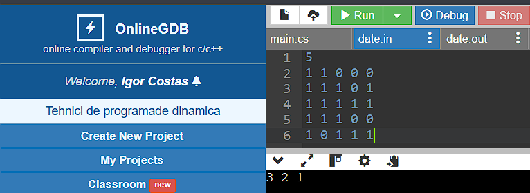
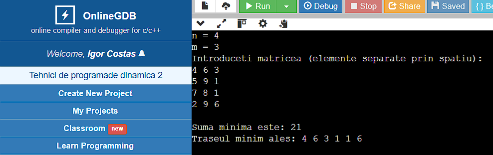
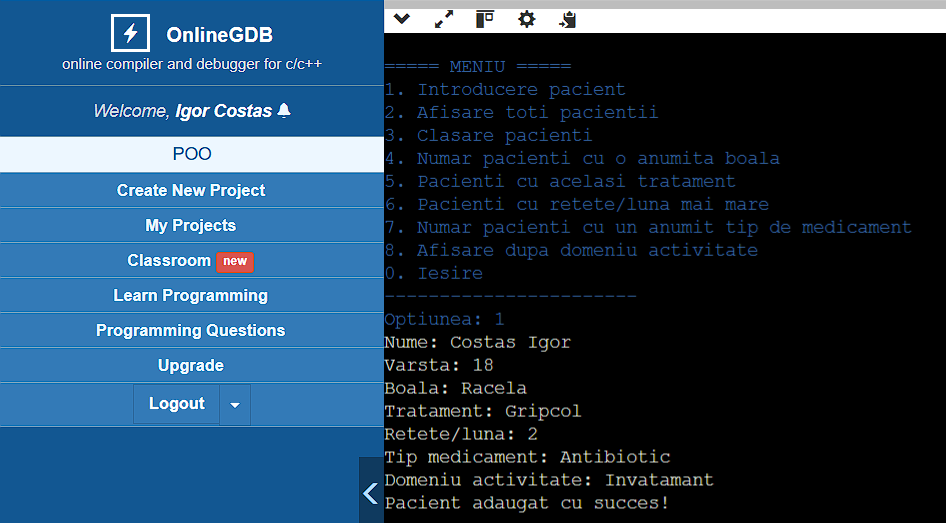
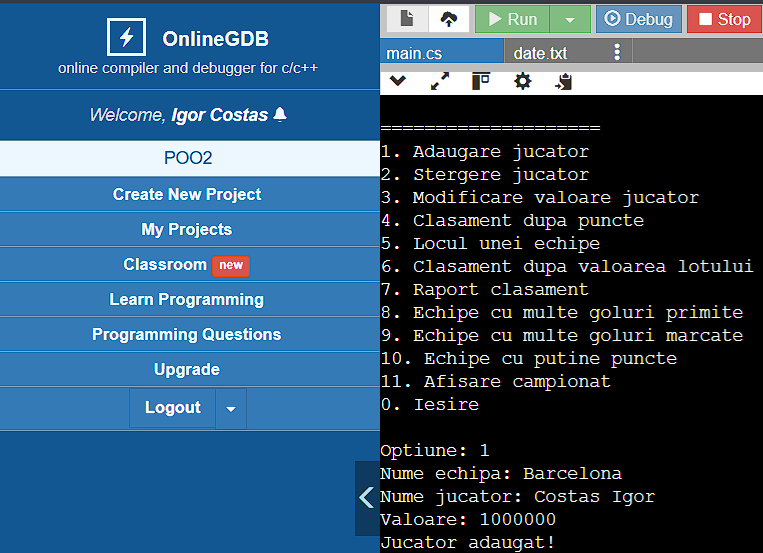
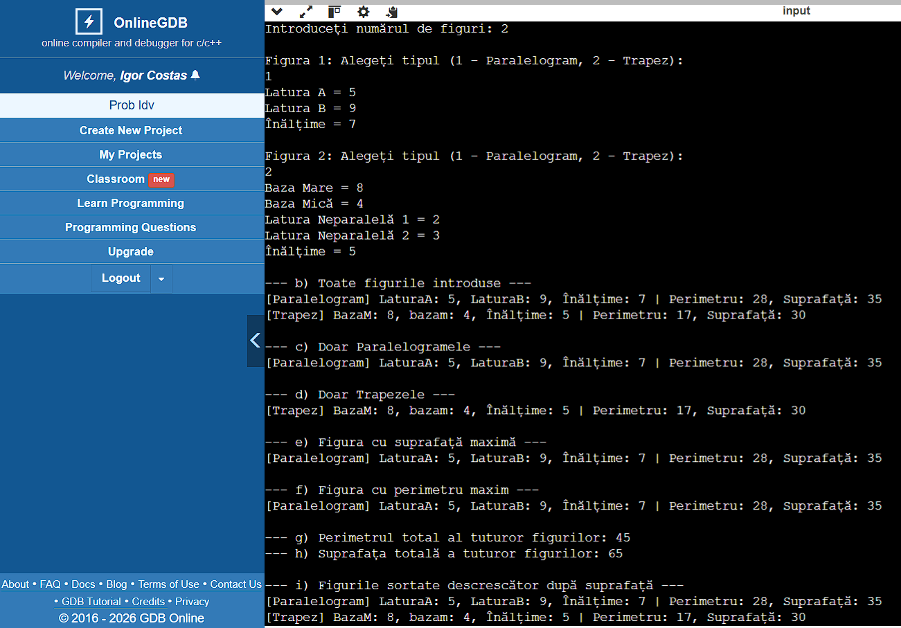

Selectați o problemă pentru a sări direct la implementarea ei:
Condiția problemei M1.6 (Metoda Trierii)
Pe o suprafață plană sunt mai multe puncte, date prin coordonatele lor. Fișierul date.in conține pe prima linie numărul de puncte din plan, iar pe următoarele linii sunt scrise coordonatele punctelor. Elaborați un program prin intermediul căruia se va determina numărul maximal de triunghiuri care pot fi formate din aceste puncte cu condiția că:
a) Triunghiurile formate nu se intersectează;
b) Triunghiurile formate sunt înscrise;
c) Triunghiurile formate au un vârf comun.
La ecran se va afișa numărul de triunghiuri.
Implementarea în limbajul C#
/******************************************************************************
Welcome to GDB Online.
GDB online is an online compiler and debugger tool for C, C++, Python, Java, PHP, Ruby, Perl,
C#, OCaml, VB, Swift, Pascal, Fortran, Haskell, Objective-C, Assembly, HTML, CSS, JS, SQLite, Prolog.
Code, Compile, Run and Debug online from anywhere in world.
*******************************************************************************/
class Punct
{
public int x, y;
public Punct(int x, int y)
{
this.x = x;
this.y = y;
}
}
class Program
{
static bool Coliniare(Punct A, Punct B, Punct C)
{
return (B.x - A.x) * (C.y - A.y) ==
(C.x - A.x) * (B.y - A.y);
}
static void Main()
{
List puncte = new List();
StreamReader sr = new StreamReader("date.in");
int n = int.Parse(sr.ReadLine());
for (int i = 0; i < n; i++)
{
string[] v = sr.ReadLine().Split();
int x = int.Parse(v[0]);
int y = int.Parse(v[1]);
puncte.Add(new Punct(x, y));
}
sr.Close();
for (int i = 0; i < puncte.Count - 1; i++)
{
for (int j = i + 1; j < puncte.Count; j++)
{
if (puncte[i].x > puncte[j].x ||
(puncte[i].x == puncte[j].x &&
puncte[i].y > puncte[j].y))
{
Punct aux = puncte[i];
puncte[i] = puncte[j];
puncte[j] = aux;
}
}
}
int nrTriunghiuri = 0;
for (int i = 0; i < n - 2; i++)
{
for (int j = i + 1; j < n - 1; j++)
{
for (int k = j + 1; k < n; k++)
{
if (!Coliniare(
puncte[i],
puncte[j],
puncte[k]))
{
nrTriunghiuri++;
}
}
}
}
Console.WriteLine("Numarul triunghiurilor: "
+ nrTriunghiuri);
}
}
date.in
4
0 0
1 1
2 0
3 2
Rezultatul execuției

Condiția problemei M2.10 (Tehnica Greedy)
Submulțimi: Se consideră o mulțime având n elemente numere întregi. Să se determine o submulțime de sumă maximă a acesteia.
Date de intrare: Prima linie a fișierului de intrare date.in conține numărul n, iar pe următoarea linie se află cele n numere întregi, separate prin câte un spațiu.
Date de ieșire: Fișierul de ieșire date.out va conține o singură linie pe care se vor afla numerele din submulțimea de sumă maximă, separate prin câte un spațiu.
Restricții și precizări: 1 ≤ n ≤ 1000. Dacă problema are mai multe soluții, se va scrie una singură.
Implementarea în limbajul C#
using System;
using System.IO;
class Program
{
static void Main()
{
StreamReader sr = new StreamReader("date.in");
int n = int.Parse(sr.ReadLine());
string[] v = sr.ReadLine().Split();
StreamWriter sw = new StreamWriter("date.out");
for (int i = 0; i < n; i++)
{
int x = int.Parse(v[i]);
if (x >= 1 && x <= 1000)
{
sw.Write(x + " ");
}
}
sr.Close();
sw.Close();
}
}
Rezultatul execuției


<
Condiția problemei M3.10 (Backtracking)
Pe o tablă de șah n x n sunt plasate m piese marcate prin valoarea -1, iar prin valoarea 0 sunt marcate pozițiile libere. Într-o poziție (i0,j0) se află un cal. Să se determine traseul format din număr minim de pași pe care calul poate sa mănânce toate piesele de pe tablă fără a trece de 2 ori prin aceeași poziție. Se citesc n și m, apoi coordonatele pieselor, iar la final coordonatele calului. Traseul va fi marcat într-o matrice afișată.
Implementarea în limbajul C#
/******************************************************************************
Welcome to GDB Online.
GDB online is an online compiler and debugger tool for C, C++, Python, Java, PHP, Ruby, Perl,
C#, OCaml, VB, Swift, Pascal, Fortran, Haskell, Objective-C, Assembly, HTML, CSS, JS, SQLite, Prolog.
Code, Compile, Run and Debug online from anywhere in world.
*******************************************************************************/
using System;
class Program
{
static int n, m;
static int[,] tabla;
static int pieseRamase;
static int[] dx = { -2, -2, -1, -1, 1, 1, 2, 2 };
static int[] dy = { -1, 1, -2, 2, -2, 2, -1, 1 };
static int[,] celMaiBunTraseu;
static int minimPasi = int.MaxValue;
static bool amGasitSolutie = false;
static void Main()
{
Console.Write("Introduceți n (dimensiunea tablei) și m (numărul de piese): ");
string[] primaLinie = Console.ReadLine().Split();
n = int.Parse(primaLinie[0]);
m = int.Parse(primaLinie[1]);
tabla = new int[n + 1, n + 1];
celMaiBunTraseu = new int[n + 1, n + 1];
pieseRamase = m;
Console.WriteLine($"Introduceți cele {m} perechi de coordonate pentru piese:");
for (int i = 0; i < m; i++)
{
string[] coordPiesa = Console.ReadLine().Split();
int r = int.Parse(coordPiesa[0]);
int c = int.Parse(coordPiesa[1]);
tabla[r, c] = -1;
}
Console.Write("Introduceți coordonatele de start ale calului (i0 j0): ");
string[] coordCal = Console.ReadLine().Split();
int i0 = int.Parse(coordCal[0]);
int j0 = int.Parse(coordCal[1]);
tabla[i0, j0] = 1;
if (tabla[i0, j0] == -1) pieseRamase--;
CautăTraseu(i0, j0, 1);
Console.WriteLine("\n-------------------------------------");
if (amGasitSolutie)
{
Console.WriteLine($"Traseul optim găsit are {minimPasi} pași:");
AfișeazăMatrice(celMaiBunTraseu);
}
else
{
Console.WriteLine("Nu s-a găsit niciun traseu valid pentru a mânca toate piesele.");
}
}
static void CautăTraseu(int linie, int col, int pas)
{
if (pieseRamase == 0)
{
amGasitSolutie = true;
if (pas < minimPasi)
{
minimPasi = pas;
SalveazăTraseuCurent();
}
return;
}
if (pas >= minimPasi) return;
for (int i = 0; i < 8; i++)
{
int linieNouă = linie + dx[i];
int colNouă = col + dy[i];
if (EsteValid(linieNouă, colNouă))
{
int stareAnterioară = tabla[linieNouă, colNouă];
if (stareAnterioară == -1) pieseRamase--;
tabla[linieNouă, colNouă] = pas + 1;
CautăTraseu(linieNouă, colNouă, pas + 1);
tabla[linieNouă, colNouă] = stareAnterioară;
if (stareAnterioară == -1) pieseRamase++;
}
}
}
static bool EsteValid(int r, int c)
{
if (r < 1 || r > n || c < 1 || c > n) return false;
if (tabla[r, c] > 0) return false;
return true;
}
static void SalveazăTraseuCurent()
{
for (int i = 1; i <= n; i++)
{
for (int j = 1; j <= n; j++)
{
celMaiBunTraseu[i, j] = tabla[i, j];
}
}
}
static void AfișeazăMatrice(int[,] matrice)
{
for (int i = 1; i <= n; i++)
{
for (int j = 1; j <= n; j++)
{
Console.Write(matrice[i, j].ToString().PadLeft(4));
}
Console.WriteLine();
}
}
}
Rezultatul execuției

Condiția problemei M3.30
Se dă un careu sub formă de matrice cu m linii și n coloane ce conține litere. Se dă, de asemenea, un cuvânt. Se cere să se găsească în careu prefixul de lungime maximă al cuvântului respectiv, căutând prin cele 4 elemente vecine ale elementelor selectate.
Implementarea în limbajul C#
/******************************************************************************
Welcome to GDB Online.
GDB online is an online compiler and debugger tool for C, C++, Python, Java, PHP, Ruby, Perl,
C#, OCaml, VB, Swift, Pascal, Fortran, Haskell, Objective-C, Assembly, HTML, CSS, JS, SQLite, Prolog.
Code, Compile, Run and Debug online from anywhere in world.
*******************************************************************************/
using System;
class Program
{
static int m, n;
static char[,] careu;
static string cuvant;
static int lungimeMaximaPrefix = 0;
static int[] di = { -1, 1, 0, 0 };
static int[] dj = { 0, 0, -1, 1 };
static void Main()
{
Console.Write("Introduceți numărul de linii (m) și coloane (n): ");
string[] dimensiuni = Console.ReadLine().Split();
m = int.Parse(dimensiuni[0]);
n = int.Parse(dimensiuni[1]);
careu = new char[m, n];
Console.WriteLine($"Introduceți cele {m} linii ale careului (litere separate prin spațiu):");
for (int i = 0; i < m; i++)
{
string[] linieLitere = Console.ReadLine().Split();
for (int j = 0; j < n; j++)
{
careu[i, j] = char.Parse(linieLitere[j]);
}
}
Console.Write("Introduceți cuvântul căutat: ");
cuvant = Console.ReadLine().Trim();
for (int i = 0; i < m; i++)
{
for (int j = 0; j < n; j++)
{
if (careu[i, j] == cuvant[0])
{
CautaPrefix(i, j, 0);
}
}
}
Console.WriteLine("\n-----------------------------------------");
Console.WriteLine($"Lungimea maximă a prefixului găsit: {lungimeMaximaPrefix}");
if (lungimeMaximaPrefix > 0)
{
Console.WriteLine($"Prefixul maxim este: {cuvant.Substring(0, lungimeMaximaPrefix)}");
}
else
{
Console.WriteLine("Nu s-a găsit nicio literă din cuvânt în careu.");
}
}
static void CautaPrefix(int i, int j, int indexCuvant)
{
if (indexCuvant + 1 > lungimeMaximaPrefix)
{
lungimeMaximaPrefix = indexCuvant + 1;
}
if (lungimeMaximaPrefix == cuvant.Length)
{
return;
}
char literaSalvata = careu[i, j];
careu[i, j] = '*';
for (int d = 0; d < 4; d++)
{
int nouI = i + di[d];
int nouJ = j + dj[d];
if (nouI >= 0 && nouI < m && nouJ >= 0 && nouJ < n)
{
if (careu[nouI, nouJ] == cuvant[indexCuvant + 1])
{
CautaPrefix(nouI, nouJ, indexCuvant + 1);
}
}
}
careu[i, j] = literaSalvata;
}
}
Rezultatul execuției

Condiția Problemei M4.10 (Generare Anagram)
Se citește un cuvânt format doar din litere mici distincte. Să se genereze toate anagramele lui utilizând algoritmul de generare a permutărilor.
Implementarea în limbajul C#
/******************************************************************************
Welcome to GDB Online.
GDB online is an online compiler and debugger tool for C, C++, Python, Java, PHP, Ruby, Perl,
C#, OCaml, VB, Swift, Pascal, Fortran, Haskell, Objective-C, Assembly, HTML, CSS, JS, SQLite, Prolog.
Code, Compile, Run and Debug online from anywhere in world.
*******************************************************************************/
using System;
class Program
{
static string cuv;
static int n;
static int[] v = new int[100];
static int nr = 0;
static bool Valid(int k)
{
for (int i = 1; i <= k - 1; i++)
if (v[i] == v[k])
return false;
return true;
}
static bool Solutie(int k)
{
return k == n;
}
static void Afisare()
{
nr++;
for (int i = 1; i <= n; i++)
Console.Write(cuv[v[i] - 1]);
Console.WriteLine();
}
static void BK(int k)
{
for (int i = 1; i <= n; i++)
{
v[k] = i;
if (Valid(k))
{
if (Solutie(k))
Afisare();
else
BK(k + 1);
}
}
}
static void Main()
{
Console.Write("Cuvantul: ");
cuv = Console.ReadLine();
n = cuv.Length;
BK(1);
Console.WriteLine("Numarul de anagrame: " + nr);
}
}
Rezultatul execuției

Condiția Problemei M5.16 (Divide et Impera)
Se citesc două numere, n natural și x real pozitiv. Fără a folosi funcția standard pow, extrageți cu 3 zecimale exacte radicalul de ordinul n din x, bazându-vă pe căutarea binară.
Implementarea în limbajul C#
using System;
class Radical
{
private int n;
private double x;
public Radical(int ordin, double numar)
{
n = ordin;
x = numar;
}
private double Putere(double a)
{
double p = 1;
for (int i = 1; i <= n; i++)
p *= a;
return p;
}
public double CalculeazaRadical()
{
double st = 0;
double dr;
if (x >= 1)
dr = x;
else
dr = 1;
double mid;
while (dr - st > 0.0001)
{
mid = (st + dr) / 2;
if (Putere(mid) < x)
st = mid;
else
dr = mid;
}
return (st + dr) / 2;
}
}
class Program
{
static void Main()
{
Console.Write("Introduceti un numar n natural: ");
int n = int.Parse(Console.ReadLine());
Console.Write("Introduceti un numar x real pozitiv: ");
double x = double.Parse(Console.ReadLine());
Radical r = new Radical(n, x);
Console.WriteLine($"{r.CalculeazaRadical():F3}");
}
}
Rezultatul execuției

Condiția Problemei M6.10 (Programare Dinamică)
În fișierul date.in se află pe prima linie un număr natural n cel mult 20 000, iar pe liniile
următoare o matrice pătratică de dimensiune n care conține doar elemente 0 și 1.
Să se determine cel mai mare pătrat care conține doar valori 1. Se vor afișa în fișierul text date.out
următoarele valori separate prin spațiu: latura pătratului, linia și coloana colțului stânga sus al
pătratului. Dacă exista mai multe astfel de pătrate se va afișa doar cel mai de sus.
Exemplu:
5
1 1 0 0 0
1 1 1 0 1
1 1 1 1 1
1 1 1 0 0
1 0 1 1 1
Se afișează 3 2 1
Implementarea în limbajul C#
/******************************************************************************
Welcome to GDB Online.
GDB online is an online compiler and debugger tool for C, C++, Python, PHP, Ruby,
C#, OCaml, VB, Perl, Swift, Prolog, Javascript, Pascal, COBOL, HTML, CSS, JS
Code, Compile, Run and Debug online from anywhere in world.
*******************************************************************************/
using System;
using System.IO;
class Program
{
static void Main()
{
StreamReader sr = new StreamReader("date.in");
int n = int.Parse(sr.ReadLine());
int[,] a = new int[n + 1, n + 1];
int[,] dp = new int[n + 1, n + 1];
for (int i = 1; i <= n; i++)
{
string[] v = sr.ReadLine().Split();
for (int j = 1; j <= n; j++)
a[i, j] = int.Parse(v[j - 1]);
}
sr.Close();
int maxim = 0;
int linie = 0;
int coloana = 0;
for (int i = 1; i <= n; i++)
{
for (int j = 1; j <= n; j++)
{
if (a[i, j] == 1)
{
if (i == 1 || j == 1)
dp[i, j] = 1;
else
dp[i, j] = 1 + Math.Min(
Math.Min(dp[i - 1, j],
dp[i, j - 1]),
dp[i - 1, j - 1]);
if (dp[i, j] > maxim)
{
maxim = dp[i, j];
linie = i - maxim + 1;
coloana = j - maxim + 1;
}
}
}
}
Console.WriteLine(maxim + " " + linie + " " + coloana);
StreamWriter sw = new StreamWriter("date.out");
sw.WriteLine(maxim + " " + linie + " " + coloana);
sw.Close();
}
}
Rezultatul execuției

Condiția Problemei M6.17 (Traseu Taxe Minim)
Clădirea Finanțelor publice este formată din birouri dispuse într-un dreptunghi cu n x m elemente, fiecare având atașată o taxă. Un contribuabil intră prin biroul (1,1) și trebuie să iasă prin (n,m). Determinați suma minimă a taxelor parcurgând celulele învecinate (jos sau dreapta).
m=3, dispunerea birourilor și taxa din fiecare:
3 7 2
6 4 3
6 3 1
6 2 2
Valoarea minimă pe care o poate plăti contribuabilul este 18 (corespunde parcurgerii birourilor cu
taxele: 3 7 2 3 1 2)
Implementarea în limbajul C#
/******************************************************************************
Welcome to GDB Online.
GDB online is an online compiler and debugger tool for C, C++, Python, Java, PHP, Ruby, Perl,
C#, OCaml, VB, Swift, Pascal, Fortran, Haskell, Objective-C, Assembly, HTML, CSS, JS, SQLite, Prolog.
Code, Compile, Run and Debug online from anywhere in world.
*******************************************************************************/
using System;
using System.Collections.Generic;
class Program
{
static void Main()
{
Console.Write("n = ");
int n = int.Parse(Console.ReadLine());
Console.Write("m = ");
int m = int.Parse(Console.ReadLine());
int[,] a = new int[n + 1, m + 1];
int[,] dp = new int[n + 1, m + 1];
Console.WriteLine("Introduceti matricea (elemente separate prin spatiu):");
for (int i = 1; i <= n; i++)
{
string[] v = Console.ReadLine().Split();
for (int j = 1; j <= m; j++)
{
a[i, j] = int.Parse(v[j - 1]);
}
}
dp[1, 1] = a[1, 1];
for (int j = 2; j <= m; j++)
dp[1, j] = dp[1, j - 1] + a[1, j];
for (int i = 2; i <= n; i++)
dp[i, 1] = dp[i - 1, 1] + a[i, 1];
for (int i = 2; i <= n; i++)
{
for (int j = 2; j <= m; j++)
{
dp[i, j] = a[i, j] + Math.Min(dp[i - 1, j], dp[i, j - 1]);
}
}
List traseu = new List();
int currI = n;
int currJ = m;
while (currI > 1 || currJ > 1)
{
traseu.Add(a[currI, currJ]);
if (currI == 1)
currJ--;
else if (currJ == 1)
currI--;
else if (dp[currI - 1, currJ] < dp[currI, currJ - 1])
currI--;
else
currJ--;
}
traseu.Add(a[1, 1]);
traseu.Reverse();
Console.WriteLine();
Console.WriteLine("Suma minima este: " + dp[n, m]);
Console.Write("Traseul minim ales: ");
foreach (int x in traseu)
{
Console.Write(x + " ");
}
Console.WriteLine();
}
}
Rezultatul execuției

Condiția Problemei 7 POO (Gestiune Pacienți)
Pacientii unui medic de familie
Cunoscandu-se informatii despre pacientii unui medic, despre bolile diagnosticate de catre acesta si
medicamentele prescrise, sa se scrie un program care va ajuta medicul in desfasurarea activitatii sale.
Operatii cerute:
1. introducerea unui nou pacient;
2. afisarea tuturor pacientilor;
3. clasarea pacientilor in pacientii varstnici, respectiv tineri;
4. determinarea numarului de pacienti care sufera de o anumita boala;
5. afisarea pacientilor carora li s-a prescris acelasi tratament;
6. afisarea pacientilor cu un numar de retete/luna mai mare decat un numar dat;
7. determinarea numarului de medicamente prescrise de un anumit tip dat;
8. determinarea pacientilor in functie de domeniul de activitate.
Implementarea în limbajul C#
/******************************************************************************
Welcome to GDB Online.
GDB online is an online compiler and debugger tool for C, C++, Python, Java, PHP, Ruby, Perl,
C#, OCaml, VB, Swift, Pascal, Fortran, Haskell, Objective-C, Assembly, HTML, CSS, JS, SQLite, Prolog.
Code, Compile, Run and Debug online from anywhere in world.
*******************************************************************************/
using System;
using System.Collections.Generic;
using System.IO;
class Pacient
{
public string Nume;
public int Varsta;
public string Boala;
public string Tratament;
public int ReteteLuna;
public string TipMedicament;
public string DomeniuActivitate;
public Pacient()
{
}
public Pacient(string nume, int varsta, string boala,
string tratament, int reteteLuna,
string tipMedicament, string domeniuActivitate)
{
Nume = nume;
Varsta = varsta;
Boala = boala;
Tratament = tratament;
ReteteLuna = reteteLuna;
TipMedicament = tipMedicament;
DomeniuActivitate = domeniuActivitate;
}
public void FromFileString(string linie)
{
string[] d = linie.Split(';');
Nume = d[0];
Varsta = int.Parse(d[1]);
Boala = d[2];
Tratament = d[3];
ReteteLuna = int.Parse(d[4]);
TipMedicament = d[5];
DomeniuActivitate = d[6];
}
public void Afisare()
{
Console.WriteLine("Nume: " + Nume);
Console.WriteLine("Varsta: " + Varsta);
Console.WriteLine("Boala: " + Boala);
Console.WriteLine("Tratament: " + Tratament);
Console.WriteLine("Retete/Luna: " + ReteteLuna);
Console.WriteLine("Tip medicament: " + TipMedicament);
Console.WriteLine("Domeniu activitate: " + DomeniuActivitate);
Console.WriteLine("-----------------------------");
Console.WriteLine();
}
}
class Program
{
static List p = new List();
static void Main()
{
if (File.Exists("date.txt"))
{
StreamReader sr = new StreamReader("date.txt");
int n = int.Parse(sr.ReadLine());
for (int i = 0; i < n; i++)
{
Pacient pac = new Pacient();
pac.FromFileString(sr.ReadLine());
p.Add(pac);
}
sr.Close();
}
int optiune;
do
{
Console.ForegroundColor = ConsoleColor.Blue;
Console.WriteLine("\n===== MENIU =====");
Console.WriteLine("1. Introducere pacient");
Console.WriteLine("2. Afisare toti pacientii");
Console.WriteLine("3. Clasare pacienti");
Console.WriteLine("4. Numar pacienti cu o anumita boala");
Console.WriteLine("5. Pacienti cu acelasi tratament");
Console.WriteLine("6. Pacienti cu retete/luna mai mare");
Console.WriteLine("7. Numar pacienti cu un anumit tip de medicament");
Console.WriteLine("8. Afisare dupa domeniu activitate");
Console.WriteLine("0. Iesire");
Console.WriteLine("-----------------------");
Console.Write("Optiunea: ");
optiune = int.Parse(Console.ReadLine());
switch (optiune)
{
case 1: Console.ForegroundColor = ConsoleColor.White;
IntroducerePacient();
break;
case 2:
Console.ForegroundColor = ConsoleColor.Green;
AfisarePacienti();
break;
case 3:
Console.ForegroundColor = ConsoleColor.White;
ClasarePacienti();
break;
case 4:
Console.ForegroundColor = ConsoleColor.White;
NumarPacientiBoala();
break;
case 5:
Console.ForegroundColor = ConsoleColor.White;
PacientiAcelasiTratament();
break;
case 6:
Console.ForegroundColor = ConsoleColor.White;
PacientiReteteMari();
break;
case 7:
Console.ForegroundColor = ConsoleColor.White;
NumarTipMedicamente();
break;
case 8:
Console.ForegroundColor = ConsoleColor.White;
PacientiDomeniu();
break;
}
} while (optiune != 0);
}
static void IntroducerePacient()
{
Console.Write("Nume: ");
string nume = Console.ReadLine();
Console.Write("Varsta: ");
int varsta = int.Parse(Console.ReadLine());
Console.Write("Boala: ");
string boala = Console.ReadLine();
Console.Write("Tratament: ");
string tratament = Console.ReadLine();
Console.Write("Retete/luna: ");
int retete = int.Parse(Console.ReadLine());
Console.Write("Tip medicament: ");
string tip = Console.ReadLine();
Console.Write("Domeniu activitate: ");
string domeniu = Console.ReadLine();
p.Add(new Pacient(nume, varsta, boala, tratament,
retete, tip, domeniu));
Console.WriteLine("Pacient adaugat cu succes!");
}
static void AfisarePacienti()
{
foreach (Pacient x in p)
x.Afisare();
}
static void ClasarePacienti()
{
Console.WriteLine("Pacienti tineri:");
foreach (Pacient x in p)
if (x.Varsta < 50)
Console.WriteLine(x.Nume);
Console.WriteLine("\nPacienti varstnici:");
foreach (Pacient x in p)
if (x.Varsta >= 50)
Console.WriteLine(x.Nume);
}
static void NumarPacientiBoala()
{
Console.Write("Boala: ");
string boala = Console.ReadLine();
int nr = 0;
foreach (Pacient x in p)
if (x.Boala == boala)
nr++;
Console.WriteLine("Numar pacienti: " + nr);
}
static void PacientiAcelasiTratament()
{
Console.Write("Tratament: ");
string tratament = Console.ReadLine();
foreach (Pacient x in p)
if (x.Tratament == tratament)
Console.WriteLine(x.Nume);
}
static void PacientiReteteMari()
{
Console.Write("Numar minim retete/luna: ");
int nr = int.Parse(Console.ReadLine());
foreach (Pacient x in p)
if (x.ReteteLuna > nr)
Console.WriteLine(x.Nume);
}
static void NumarTipMedicamente()
{
Console.Write("Tip medicament: ");
string tip = Console.ReadLine();
int nr = 0;
foreach (Pacient x in p)
if (x.TipMedicament == tip)
nr++;
Console.WriteLine("Numar pacienti: " + nr);
}
static void PacientiDomeniu()
{
Console.Write("Domeniu activitate: ");
string domeniu = Console.ReadLine();
foreach (Pacient x in p)
if (x.DomeniuActivitate == domeniu)
Console.WriteLine(x.Nume);
}
}
Fișier Text Bază de Date (date.txt)
10 Ion Popescu;45;Gripa;Paracetamol;3;Antibiotic;Farmacie Maria Ionescu;30;Raceala;Nurofen;2;Antiinflamator;Spital Ana Rusu;50;Diabet;Insulina;4;Hormonal;Clinica Vasile Munteanu;62;Hipertensiune;Enalapril;5;Cardiovascular;Constructii Elena Cojocaru;28;Astm;Ventolin;2;Bronhodilatator;Invatamant
Rezultatul execuției

Condiția Problemei 12 POO
Campionat de fotbal
Sa se dezvolte o aplicatie care sa simuleze desfasurarea unui campionat de fotbal. Se cunosc urmatoarele
informatii:
numele campionatului; numarul de echipe inscrise in campionat; numarul de etape jucate; Pentru fiecare echipa
inscrisa se cunosc:
1. numele echipei;
2. numele antrenorului;
3. numele j ucatorilor;
4. valoarea fiecarui jucator;
5. numar de j ocuri sustinute;
6. numar de victorii; numar de infrangerii;
7. numar de goluri primite;
8. numar de goluri inscrise;
Operatii:
1. adaugarea unui nou jucator;
2. stergerea unui jucator;
3. schimbarea valorii unui anumit jucator;
4. afisarea, dupa fiecare etapa a campionatului, a clasamentul in functie de numarul de puncte;
5. determinarea locului ocupat de o anumita echipa;
6. realizarea unui clasament luand in calcul valorile intrinseci ale jucatorilor echipelor;
7. compararea intre clasamentul determinat la punctul anterior si cel real, si generarea unui raport;
8. determinarea echipelor ce au primit un numar de goluri mai mare decat un intreg pozitiv introdus de
la tastatura;
9. determinarea echipelor ce au marcat un numar de goluri mai mare decat un intreg pozitiv introdus de
la tastatura;
10. determinarea echipelor ce au un numar de puncte mai mic decat un intreg pozitiv introdus de la
tastatura;
Implementarea în limbajul C#
/******************************************************************************
Welcome to GDB Online.
GDB online is an online compiler and debugger tool for C, C++, Python, Java, PHP, Ruby, Perl,
C#, OCaml, VB, Swift, Pascal, Fortran, Haskell, Objective-C, Assembly, HTML, CSS, JS, SQLite, Prolog.
Code, Compile, Run and Debug online from anywhere in world.
*******************************************************************************/
using System;
using System.Collections.Generic;
using System.IO;
class Jucator
{
public string Nume;
public double Valoare;
public Jucator()
{
}
public Jucator(string nume, double valoare)
{
Nume = nume;
Valoare = valoare;
}
public void FromFileString(string linie)
{
string[] d = linie.Split(';');
Nume = d[0];
Valoare = double.Parse(d[1]);
}
public void Afisare()
{
Console.WriteLine(" " + Nume + " - " + Valoare + " euro");
}
}
class Echipa
{
public string Nume;
public string Antrenor;
public int Jocuri;
public int Victorii;
public int Infrangeri;
public int GoluriPrimite;
public int GoluriInscrise;
public List Jucatori = new List();
public int Puncte
{
get { return Victorii * 3; }
}
public Echipa()
{
}
public void FromFile(StreamReader sr)
{
string linie = sr.ReadLine();
while (linie != null && linie.Trim() == "")
linie = sr.ReadLine();
string[] d = linie.Split(';');
if (d.Length < 7)
{
Console.WriteLine("Eroare linie echipa: " + linie);
return;
}
Nume = d[0];
Antrenor = d[1];
Jocuri = int.Parse(d[2]);
Victorii = int.Parse(d[3]);
Infrangeri = int.Parse(d[4]);
GoluriPrimite = int.Parse(d[5]);
GoluriInscrise = int.Parse(d[6]);
int nrJucatori = int.Parse(sr.ReadLine());
for (int i = 0; i < nrJucatori; i++)
{
string j = sr.ReadLine();
if (j == null || j.Trim() == "")
{
i--;
continue;
}
Jucator juc = new Jucator();
juc.FromFileString(j);
Jucatori.Add(juc);
}
}
public double ValoareLot()
{
double suma = 0;
foreach (Jucator j in Jucatori)
suma += j.Valoare;
return suma;
}
public void Afisare()
{
Console.WriteLine("\n=========================");
Console.WriteLine("Echipa: " + Nume);
Console.WriteLine("Antrenor: " + Antrenor);
Console.WriteLine("Jocuri: " + Jocuri);
Console.WriteLine("Victorii: " + Victorii);
Console.WriteLine("Infrangeri: " + Infrangeri);
Console.WriteLine("Goluri inscrise: " + GoluriInscrise);
Console.WriteLine("Goluri primite: " + GoluriPrimite);
Console.WriteLine("Puncte: " + Puncte);
Console.WriteLine("Valoare lot: " + ValoareLot());
Console.WriteLine("\nJucatori:");
foreach (Jucator j in Jucatori)
j.Afisare();
}
}
class Campionat
{
public string NumeCampionat;
public int NrEtape=0;
public List Echipe = new List();
public void CitireFisier(string fisier)
{
StreamReader sr = new StreamReader(fisier);
NumeCampionat = sr.ReadLine();
int nrEchipe = int.Parse(sr.ReadLine());
for (int i = 0; i < nrEchipe; i++)
{
Echipa e = new Echipa();
e.FromFile(sr);
Echipe.Add(e);
}
sr.Close();
}
public void Afisare()
{
Console.WriteLine("\nCampionat: " + NumeCampionat);
foreach (Echipa e in Echipe)
e.Afisare();
}
}
class Program
{
static Campionat campionat = new Campionat();
static void Main()
{
campionat.CitireFisier("date.txt");
int op;
do
{
Console.WriteLine("\n====================");
Console.WriteLine("1. Adaugare jucator");
Console.WriteLine("2. Stergere jucator");
Console.WriteLine("3. Modificare valoare jucator");
Console.WriteLine("4. Clasament dupa puncte");
Console.WriteLine("5. Locul unei echipe");
Console.WriteLine("6. Clasament dupa valoarea lotului");
Console.WriteLine("7. Raport clasament");
Console.WriteLine("8. Echipe cu multe goluri primite");
Console.WriteLine("9. Echipe cu multe goluri marcate");
Console.WriteLine("10. Echipe cu putine puncte");
Console.WriteLine("11. Afisare campionat");
Console.WriteLine("0. Iesire");
Console.Write("\nOptiune: ");
op = int.Parse(Console.ReadLine());
switch (op)
{
case 1:
AdaugaJucator();
break;
case 2:
StergeJucator();
break;
case 3:
ModificaValoare();
break;
case 4:
ClasamentPuncte();
break;
case 5:
LocEchipa();
break;
case 6:
ClasamentValori();
break;
case 7:
RaportClasament();
break;
case 8:
GoluriPrimite();
break;
case 9:
GoluriMarcate();
break;
case 10:
PuncteMici();
break;
case 11:
campionat.Afisare();
break;
}
} while (op != 0);
}
static void AdaugaJucator()
{
Console.Write("Nume echipa: ");
string echipa = Console.ReadLine();
foreach (Echipa e in campionat.Echipe)
{
if (e.Nume == echipa)
{
Console.Write("Nume jucator: ");
string nume = Console.ReadLine();
Console.Write("Valoare: ");
double valoare = double.Parse(Console.ReadLine());
e.Jucatori.Add(
new Jucator(nume, valoare));
Console.WriteLine("Jucator adaugat!");
return;
}
}
Console.WriteLine("Echipa nu exista!");
}
static void StergeJucator()
{
Console.Write("Nume echipa: ");
string echipa = Console.ReadLine();
foreach (Echipa e in campionat.Echipe)
{
if (e.Nume == echipa)
{
Console.Write("Nume jucator: ");
string nume = Console.ReadLine();
for (int i = 0; i < e.Jucatori.Count; i++)
{
if (e.Jucatori[i].Nume == nume)
{
e.Jucatori.RemoveAt(i);
Console.WriteLine("Jucator sters!");
return;
}
}
}
}
Console.WriteLine("Jucatorul nu exista!");
}
static void ModificaValoare()
{
Console.Write("Nume echipa: ");
string echipa = Console.ReadLine();
foreach (Echipa e in campionat.Echipe)
{
if (e.Nume == echipa)
{
Console.Write("Nume jucator: ");
string nume = Console.ReadLine();
foreach (Jucator j in e.Jucatori)
{
if (j.Nume == nume)
{
Console.Write("Noua valoare: ");
j.Valoare =
double.Parse(Console.ReadLine());
Console.WriteLine("Valoare modificata!");
return;
}
}
}
}
Console.WriteLine("Jucatorul nu exista!");
}
static void ClasamentPuncte()
{
List clasament =new List(campionat.Echipe);
clasament.Sort(
(a, b) => b.Puncte.CompareTo(a.Puncte));
Console.WriteLine("\nCLASAMENT DUPA PUNCTE");
for (int i = 0; i < clasament.Count; i++)
{
Console.WriteLine(
(i + 1) + ". " +
clasament[i].Nume +
" - " +
clasament[i].Puncte +
" puncte");
}
}
static void LocEchipa()
{
Console.Write("Nume echipa: ");
string nume = Console.ReadLine();
List clasament = new List(campionat.Echipe);
clasament.Sort((a, b) => b.Puncte.CompareTo(a.Puncte));
for (int i = 0; i < clasament.Count; i++)
{
if (clasament[i].Nume == nume)
{
Console.WriteLine(
"Locul ocupat este: " + (i + 1));
return;
}
}
Console.WriteLine("Echipa nu exista!");
}
static void ClasamentValori()
{
List clasament =
new List(campionat.Echipe);
clasament.Sort((a, b) =>b.ValoareLot().CompareTo(a.ValoareLot()));
Console.WriteLine("\nCLASAMENT DUPA VALOAREA LOTULUI");
for (int i = 0; i < clasament.Count; i++)
{
Console.WriteLine(
(i + 1) + ". " +
clasament[i].Nume +
" - " +
clasament[i].ValoareLot());
}
}
static void RaportClasament()
{
List real =new List(campionat.Echipe);
List teoretic = new List(campionat.Echipe);
real.Sort(
(a, b) => b.Puncte.CompareTo(a.Puncte));
teoretic.Sort(
(a, b) =>
b.ValoareLot().CompareTo(a.ValoareLot()));
Console.WriteLine("\nRAPORT CLASAMENT REAL VS TEORETIC");
foreach (Echipa e in campionat.Echipe)
{
int locReal = 0;
int locTeoretic = 0;
for (int i = 0; i < real.Count; i++)
if (real[i].Nume == e.Nume)
locReal = i + 1;
for (int i = 0; i < teoretic.Count; i++)
if (teoretic[i].Nume == e.Nume)
locTeoretic = i + 1;
Console.WriteLine(
e.Nume +
" | Real: " + locReal +
" | Teoretic: " + locTeoretic +
" | Diferenta: " +
Math.Abs(locReal - locTeoretic));
}
}
static void GoluriPrimite()
{
Console.Write("Introduceti numarul de goluri: ");
int x = int.Parse(Console.ReadLine());
Console.WriteLine( "\nEchipe cu goluri primite > " + x);
foreach (Echipa e in campionat.Echipe)
{
if (e.GoluriPrimite > x)
Console.WriteLine(e.Nume);
}
}
static void GoluriMarcate()
{
Console.Write("Introduceti numarul de goluri: ");
int x = int.Parse(Console.ReadLine());
Console.WriteLine("\nEchipe cu goluri marcate > " + x);
foreach (Echipa e in campionat.Echipe)
{
if (e.GoluriInscrise > x)
Console.WriteLine(e.Nume);
}
}
static void PuncteMici()
{
Console.Write("Introduceti numarul de puncte: ");
int x = int.Parse(Console.ReadLine());
Console.WriteLine( "\nEchipe cu puncte < " + x);
foreach (Echipa e in campionat.Echipe)
{
if (e.Puncte < x)
Console.WriteLine(
e.Nume + " - " + e.Puncte);
}
}
}
Date.txt
Super Liga Europa
5
Real Madrid;Carlo Ancelotti;20;15;3;18;45
2
Vinicius;1200000
Bellingham;1500000
Barcelona;Xavi;20;14;4;20;42
2
Pedri;900000
Lewandowski;1300000
Bayern Munchen;Thomas Tuchel;20;16;3;14;48
2
Kane;1600000
Musiala;1100000
PSG;Luis Enrique;20;15;4;17;44
2
Mbappe;2200000
Dembele;1000000
Atletico Madrid;Diego Simeone;20;14;5;15;37
2
Griezmann;1100000
Morata;800000
Rezultatul execuției

Condiția Problemei individuale
Se consideră drept bază clasa patrulater. În baza acestei clase se derivă clasele paralelogram și trapez. Să se implementeze polimorfismul pentru metodele: citire, afișare, suprafața și perimetru. De la tastatură se citește numărul de figuri. Elaborați un program care va permite:
a) citirea figurilor de la tastatură;
b) afișarea acestora;
c) afișarea figurilor sub formă de paralelogram;
d) afișarea figurilor sub formă de trapez;
e) afișarea figurii cu suprafață maximă;
f) afișarea figurii cu perimetru maxim;
g) afișarea perimetrului total al figurilor;
h) afișarea suprafeței totale a figurilor;
i) sortarea figurilor în ordine descrescătoare suprafeței.
Implementarea în limbajul C#
/******************************************************************************
Welcome to GDB Online.
GDB online is an online compiler and debugger tool for C, C++, Python, Java, PHP, Ruby, Perl,
C#, OCaml, VB, Swift, Pascal, Fortran, Haskell, Objective-C, Assembly, HTML, CSS, JS, SQLite, Prolog.
Code, Compile, Run and Debug online from anywhere in world.
*******************************************************************************/
using System;
using System.Collections.Generic;
using System.Linq;
class Program
{
static void Main()
{
Console.Write("Introduceți numărul de figuri: ");
int nrFiguri = int.Parse(Console.ReadLine());
List figuri = new List();
for (int i = 0; i < nrFiguri; i++)
{
Console.WriteLine($"\nFigura {i + 1}: Alegeți tipul (1 - Paralelogram, 2 - Trapez): ");
int tip = int.Parse(Console.ReadLine());
if (tip == 1)
{
Paralelogram p = new Paralelogram();
p.Citire();
figuri.Add(p);
}
else if (tip == 2)
{
Trapez t = new Trapez();
t.Citire();
figuri.Add(t);
}
else
{
Console.WriteLine("Opțiune invalidă! Se va introduce un paralelogram implicit.");
figuri.Add(new Paralelogram());
}
}
Console.WriteLine("\n--- b) Toate figurile introduse ---");
foreach (var f in figuri)
{
f.Afisare();
}
Console.WriteLine("\n--- c) Doar Paralelogramele ---");
foreach (var f in figuri)
{
if (f is Paralelogram) f.Afisare();
}
Console.WriteLine("\n--- d) Doar Trapezele ---");
foreach (var f in figuri)
{
if (f is Trapez) f.Afisare();
}
if (figuri.Count > 0)
{
Console.WriteLine("\n--- e) Figura cu suprafață maximă ---");
Patrulater suprafataMaxima = figuri.OrderByDescending(f => f.Suprafata()).First();
suprafataMaxima.Afisare();
Console.WriteLine("\n--- f) Figura cu perimetru maxim ---");
Patrulater perimetruMaxim = figuri.OrderByDescending(f => f.Perimetru()).First();
perimetruMaxim.Afisare();
}
double perimetruTotal = figuri.Sum(f => f.Perimetru());
Console.WriteLine($"\n--- g) Perimetrul total al tuturor figurilor: {perimetruTotal}");
double suprafataTotala = figuri.Sum(f => f.Suprafata());
Console.WriteLine($"--- h) Suprafața totală a tuturor figurilor: {suprafataTotala}");
Console.WriteLine("\n--- i) Figurile sortate descrescător după suprafață ---");
var figuriSortate = figuri.OrderByDescending(f => f.Suprafata()).ToList();
foreach (var f in figuriSortate)
{
f.Afisare();
}
}
}
abstract class Patrulater
{
public string Nume { get; set; }
public abstract void Citire();
public abstract void Afisare();
public abstract double Suprafata();
public abstract double Perimetru();
}
class Paralelogram : Patrulater
{
private double laturaA;
private double laturaB;
private double inaltime;
public Paralelogram() { Nume = "Paralelogram"; }
public override void Citire()
{
Console.Write("Latura A = ");
laturaA = double.Parse(Console.ReadLine());
Console.Write("Latura B = ");
laturaB = double.Parse(Console.ReadLine());
Console.Write("Înălțime = ");
inaltime = double.Parse(Console.ReadLine());
}
public override void Afisare()
{
Console.WriteLine($"[{Nume}] LaturaA: {laturaA}, LaturaB: {laturaB}, Înălțime: {inaltime} | Perimetru: {Perimetru()}, Suprafață: {Suprafata()}");
}
public override double Perimetru() => 2 * (laturaA + laturaB);
public override double Suprafata() => laturaA * inaltime;
}
class Trapez : Patrulater
{
private double bazaMare;
private double bazaMica;
private double laturaNeparalela1;
private double laturaNeparalela2;
private double inaltime;
public Trapez() { Nume = "Trapez"; }
public override void Citire()
{
Console.Write("Baza Mare = ");
bazaMare = double.Parse(Console.ReadLine());
Console.Write("Baza Mică = ");
bazaMica = double.Parse(Console.ReadLine());
Console.Write("Latura Neparalelă 1 = ");
laturaNeparalela1 = double.Parse(Console.ReadLine());
Console.Write("Latura Neparalelă 2 = ");
laturaNeparalela2 = double.Parse(Console.ReadLine());
Console.Write("Înălțime = ");
inaltime = double.Parse(Console.ReadLine());
}
public override void Afisare()
{
Console.WriteLine($"[{Nume}] BazaM: {bazaMare}, bazam: {bazaMica}, Înălțime: {inaltime} | Perimetru: {Perimetru()}, Suprafață: {Suprafata()}");
}
public override double Perimetru() => bazaMare + bazaMica + laturaNeparalela1 + laturaNeparalela2;
public override double Suprafata() => ((bazaMare + bazaMica) * inaltime) / 2;
}
Rezultatul execuției
